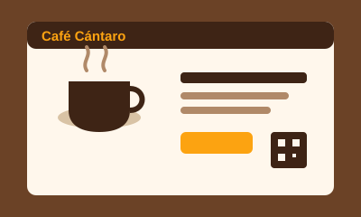
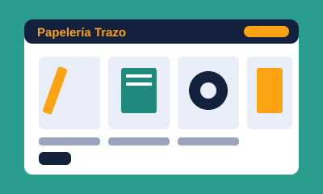
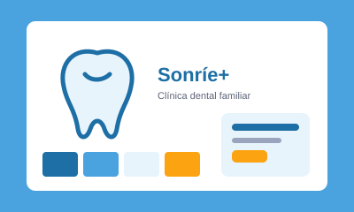
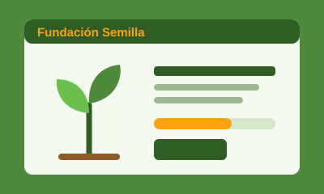

Café Cántaro
Página de presentación con menú digital. Resultado: más consultas por WhatsApp durante el mes de lanzamiento.
Prototipos y trabajos que respaldan nuestro método
Estos proyectos son prototipos desarrollados como parte de nuestra etapa de pruebas con negocios locales (casos ilustrativos con fines educativos).

Página de presentación con menú digital. Resultado: más consultas por WhatsApp durante el mes de lanzamiento.

Catálogo de 25 productos con pedido por mensaje. Resultado: primeros pedidos de clientes fuera de la colonia.

Logotipo, paleta de colores y página informativa con formulario de citas.

Página con barra de avance de metas para una campaña de reforestación escolar.
“Ahora mis clientes encuentran el menú desde su celular y ya no tengo que explicarlo uno por uno.”— Dueña de Café Cántaro (prototipo)
“Nos entregaron la página en menos de tres semanas y con precios que sí podíamos pagar.”— Encargado de Papelería Trazo (prototipo)
Los testimonios y resultados son ilustrativos y forman parte de un ejercicio educativo.